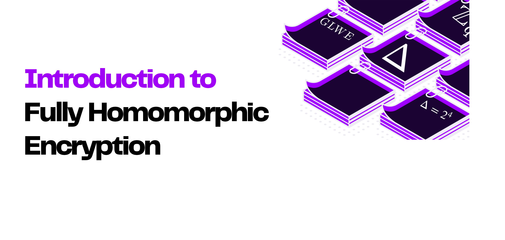

Home | Resources | Use cases | Join the community | Talks and meetups | Conference 2023
Getting started
Whether you’re completely new to FHE, a developer wanting to implement a library, or a researcher interested in reading papers and watching talks, this page will help you get acquainted better with the fascinating world of FHE.
For beginners
Beginner resources:
| 2021.12.22 |
Data governance is in desperate need of innovation |
From a policy perspective, historically, from about the late seventies, the topic of data governance has been framed with a focus on concerns around privacy and data protection. It became a trade issue at the end of the nineties and since then there has been very little progress in multilateral fora in terms of finding a common vocabulary to discuss data governance more systemically, and to measure the value of data, both from an economic and social perspective. |
Jeremy Bradley and Lorrayne Porciuncula |
Non-technical |
| 2021.12.01 |
Homomorphic Encryption 101 |
Fully Homomorphic Encryption (FHE) has long been considered as the holy grail of cryptography. The concept was imagined in the late seventies, but the first realization only came three decades later. Today, both the public and private sectors are embracing this new security paradigm and are actively working at making FHE more practical and easier to use. |
Marc Joye |
Non-technical |
| 2021.09.15 |
6-minute introduction to end to end encryption and try out an FHE demo for yourself |
Encryption has been around for thousands of years, used across the ages to send secret messages to one another. For example the Caesar cipher, which consists of simply swapping letters in the alphabet, is one of the earliest encryption techniques, dating back to 60BC! [...] |
Zama |
Non-technical |
| 2021.08.26 |
People shouldn't care about privacy |
A technique called homomorphic encryption is about to radically change how we guarantee privacy online. |
Rand Hindi |
Non-technical |
Use cases
| 2022.09 |
Spiral for BTC |
Look up any Bitcoin (BTC) address balance, without revealing the address to anyone |
Spiral |
| 2022.08 |
Ensuring security of artificial pancreas device system using homomorphic encryption |
The privacy and security of a person’s health data is a human right protected by law in many countries. However, networked information systems that store and process health data may have security vulnerabilities and are attractive to attacks aimed to gain either unauthorized access to these data or compromise it. Compromising data of patients with chronic conditions like Diabetes Mellitus has potentially life-threatening consequences (e.g., from incorrect insulin dosing due to loss of glucose measurement data integrity). Consequently, privacy-preserving computing methods are called to mitigate the risk of a data breach. |
Haotian Weng, Chirath Hettiarachchi, Christopher Nolan, Hanna Suominen, Artem Lenskiy |
| 2022.08.18 |
Encrypted Conway's Game of Life |
Encrypted Conway's Game of Life in Rust with the Concrete library |
Zama |
| 2022.08.15 |
Secure human action recognition by encrypted neural network inference |
Advanced computer vision technology can provide near real-time home monitoring to support “aging in place” by detecting falls and symptoms related to seizures and stroke. Affordable webcams, together with cloud computing services (to run machine learning algorithms), can potentially bring significant social benefits. However, it has not been deployed in practice because of privacy concerns. In this paper, we propose a strategy that uses homomorphic encryption to resolve this dilemma, which guarantees information confidentiality while retaining action detection. Our protocol for secure inference can distinguish falls from activities of daily living with 86.21% sensitivity and 99.14% specificity, with an average inference latency of 1.2 seconds and 2.4 seconds on real-world test datasets using small and large neural nets, respectively. We show that our method enables a 613x speedup over the latency-optimized LoLa and achieves an average of 3.1x throughput increase in secure inference compared to the throughput-optimized nGraph-HE2. |
Miran Kim, Xiaoqian Jiang, Kristin Lauter, Elkhan Ismayilzada, Shayan Shams |
| 2022.07.22 |
Morfix.io |
BWeb-based UI to play around with the Microsoft Seal library |
Morfix |
| 2022.07.07 |
Titanic ML from disaster |
Building a predictive model over encrypted data with Concrete-ML |
Zama |
| 2022.06.07 |
lattigo-polls |
Web-application for scheduling meetings using lattigo |
LDS |
| 2022.05.24 |
Spiral wiki |
Read Wikipedia privately using homomorphic encryption |
Samir Menon |
| 2022.10.04 |
crypto-geofence |
Geo-fencing demo application based on Paillier scheme |
Georeactor |
| 2022.07.08 |
nGraph-HE |
Deep Learning (DL) with HE through Intel’s DL graph compiler nGraph based on SEAL |
Intel AI |
| 2022.04.26 |
Rosetta |
A privacy-preserving framework based on TensorFlow |
LatticeX Foundation |
| 2022.03.10 |
tf-encrypted |
Bridge between TensorFlow and the Microsoft SEAL |
TF Encrypted |
💡 To ask questions, learn even more, and to keep up to date on all the advances in FHE make sure to join the community and subscribe to the newsletter.
Back to top
For developers

FHE libraries
<!--<td><img src="https://img.shields.io/badge/💻-Library-blue"></td>-->
 |
Concrete |
Rust FHE library that implements Zama's variant of TFHE. |
Zama |
 |
HElib |
BGV scheme with bootstrapping and the Approximate Number CKKS scheme. |
HomEnc |
 |
Lattigo |
lattice-based multiparty homomorphic encryption library in Go. |
LDS |
 |
OpenFHE |
OpenFHE is an open-source FHE library that includes efficient implementations of common FHE schemes. |
OpenFHE.org |
|
Palisade |
C++ FHE library that supports all the major FHE protocols. |
Palisade |
 |
SEAL |
C++ FHE library implementing BFV and CKKS schemes. |
Microsoft |
FHE engineering
| 2022.04.28 |
Single-Trace Side-Channel Attack on SEAL Homomorphic Encryption Library |
In this talk, Furkan will talk about the first side-channel attack on homomorphic encryption, which allows computing on encrypted data. The attack targets the Gaussian sampling in the SEAL’s encryption phase and can extract the entire secret message with a single power measurement. |
Furkan Aydin |
Engineering |
| 2022.02.25 |
Single-server private information retrieval using homomorphic encryption |
In this talk, Haris will talk about private information retrieval (PIR) protocols based on Somewhat/Fully Homomorphic Encryption (SHE/FHE). PIR allows the client to privately retrieve a record from a database hosted at the server. He will first discuss a general framework of PIR protocols. Followed by optimizations to improve the request size, computation time, and response overhead including the results from ACM CCS’21. |
Muhammad Haris |
Engineering |
| 2021.12.21 |
FHE at the speed of light |
After a very brief introduction to the core operations of FHE and what makes them slow, we will provide a short review of the physical principles behind Fourier optics and a high-level explanation of how it can, in principle, eliminate the main bottleneck in FHE. We will then show how our technology leverages this theoretical potential to develop a practical solution in a time frame of a few years. Finally, we will present results from numerical experiments using a modified version of the Concrete library showing the speed-up this technology can provide in the next three years. We will also take this opportunity to show how easy Concrete, the Google FHE transpiler, and other libraries make it for companies outside the traditional cryptography community to work with FHE, another important point for future wide adoption. |
Florent Michel |
Engineering |
| 2021.11.23 |
Why we need revolutionnary hardware for FHE |
The need for revolutionary hardware to enable FHE applications was identified by DARPA in the context of the DPRIVE program. As part of the DPRIVE program execution, Intel and Microsoft are realizing a platform to make FHE technologies more accessible by developing revolutionary hardware and software stack. Furthermore, the team is committed to the development of international standards and best practices. Overall, the initiative can enable unprecedented, cost-effective FHE performance, and pave the path for industrial deployment. |
Rosario Cammarota |
Engineering |
| 2021.08.26 |
Google's C++ to FHE compiler |
In this talk, Shruthi and Rob present the Fully Homomorphic Encryption Transpiler recently released by Google. The FHE transpiler automatically converts high-level [C++] code that operates on unencrypted data into a form that performs the same computation on encrypted data. |
Shruthi Gorantala and Rob Springer |
Engineering |
| 2021.05.20 |
Developer Tools & Compilers |
In this talk, Alex walks through the inherent engineering challenges in developing FHE applications and discusses how tools like compilers that translate between standard programs and FHE implementations can step in to address some of these complexities. He discusses recent work in this space and, using different case study applications that represent common aspects of FHE applications, highlight where barriers to entry have been successfully lowered and where they still remain. Finally, he concludes by showing examples of what non-expert developers can achieve today and outline future directions for FHE compiler development. |
Alexander Viand |
Engineering |
| 2021.04.15 |
Private set intersection via somewhat homomorphic encryption |
Somewhat/Fully Homomorphic Encryption (SHE/FHE) is a versatile tool for many cryptographic applications. In this talk, Ilia shows how to exploit SHE/FHE to build Private Set Intersection (PSI) protocols where two parties wish to compute the intersection of their respective private sets. He discusses the general framework of such protocols and the state-of-the-art optimizations including the results from ACM CCS’21. |
Ilia Iliashenko |
Engineering |
Development tutorials
| 2022.08.18 |
Encrypted Conway's Game of Life in Rust with the Concrete library |
In July 2022, Zama announced the latest release of the Concrete Framework that aims at simplifying the use of Fully Homomorphic Encryption, or FHE, a powerful tool allowing users to compute over encrypted data. The goal of this blogpost is to see this new version of Concrete in action. We will upgrade an already existing example, Conway’s Game of life by Optalysys, using concrete-boolean so it can benefit from new features available in Concrete v0.2. |
Jean-Baptiste Orfila |
Tutorials |
| 2021.11.03 |
Encrypted search using Fully Homomorphic Encryption |
Information is the lifeblood of the modern internet. As of January 2021, 4.66 billion people were active internet users, each one sending and receiving a torrent of data. Quite of lot of this data is (relatively speaking) harmless and can be shared and accessed to various degrees. A vast and lucrative market around analysing this data has sprung up to take advantage of this highly accessible information, albeit with associated concerns about how this data is used. |
Florent Michel, Joseph Wilson and Edward Cottle |
Tutorials |
| 2021.09.30 |
Concrete Boolean and Conway's Game of Life |
When developing any application, we first need an understanding of what it is that we want to achieve. In this case, we want to implement Conway’s Game of Life through encrypted Boolean operations. |
Florent Michel, Joseph Wilson and Edward Cottle. |
Tutorials |
| 2021.08.26 |
Homomorphic Machine Learning using Numpy & Concrete |
Making FHE mainstream requires tools that make it easy to use for non-cryptographers. Being able to take regular Numpy programs and run them on encrypted data would enable data scientists to integrate FHE into their models, however complex they might be. In this talk, the team at Zama introduce a homomorphic numpy compiler, demonstrate how it can be used to run a recurrent neural network on encrypted data, and share their thoughts on homomorphic compiling. |
Rand Hindi, Ayoub Benaissa, and Samuel Tap |
Tutorials |
💡 To ask questions, learn even more, and to keep up to date on all the advances in FHE make sure to join the community and subscribe to the newsletter.
Back to top
For researchers

FHE Cryptography Theory
| 2022.07.07 |
Homomorphic Large Precision Integers Using Concrete |
In this talk, we will detail a few constructions of large integers based on the TFHE cryptosystem. We will also explore their theoretical aspects along with their implementations in the Concrete library. |
Jean-Baptiste Orfila |
Theory |
| 2022.06.02 |
TFHE deep-dive - part 4 - Programmable Bootstrapping |
Now that we have all these ingredients, we are finally ready to build the most complex operation. We need three more additional building blocks -- the modulus switching, the sample extraction and the blind rotation -- and then we will be good to go. |
Ilaria Chillotti |
Theory |
| 2022.05.18 |
TFHE deep-dive - part 3 - Key switching and leveled multiplications |
In this post, we will continue describing some more leveled homomorphic operations and building blocks. The goal is to create a solid basis to be able to understand bootstrapping in the next blog post. |
Ilaria Chillotti |
Theory |
| 2022.05.11 |
TFHE deep-dive - part 2 - Encodings and linear leveled operations |
In this post we will start discovering how to perform operations on these ciphertexts. In particular, we will describe two simple homomorphic operations: homomorphic addition and multiplication by unencrypted constants. |
Ilaria Chillotti |
Theory |
| 2022.05.04 |
TFHE deep-dive - part 1- Ciphertext types |
This blog post is part of a series of posts dedicated to the Fully Homomorphic Encryption scheme called TFHE (also known as CGGI, from the names of the authors Chillotti-Gama-Georgieva-Izabachène). Each post will allow you to go deeper into the understanding of the scheme. The subject is challenging, we know, but don’t worry, we will dive into it little by little. |
Ilaria Chillotti |
Theory |
| 2021.10.18 |
Guide to Fully Homomorphic Encryption over the discretized torus |
This guide is intended to practitioners. It explains the inner-workings of TFHE, a torus-based fully homomorphic encryption scheme. More exactly, it describes its implementation on a discretized version of the torus. It also explains in detail the technique of the programmable bootstrapping. |
Marc Joye |
Theory |
| 2022 |
Foundations of Private Computation |
Become a data scientist and statistician capable of studying data you do not own and cannot see. Learn every major privacy-preserving technique to an intermediate level, understand how they work together, and how you can use them to safely study data owned by another organization (such as another university, enterprise, or government) without ever seeing the underlying data yourself. |
Open Mined |
Theory |
| 2022.03.29 |
Verifiable Computation over Encrypted Data: SNARKs and more |
This talk will present Rinocchio, a new designated-verifiable SNARK for ring arithmetic that allows to verify evaluations of FHE ciphertexts. We will discuss the challenges and open problems in the area. |
Anca Nitulescu |
Theory |
| 2022.01.20 |
An overview of Hybrid Homomorphic Encryption |
Fully Homomorphic Encryption (FHE) has long been considered the crown jewel of cryptology and it is only recently that efficient solutions have started to emerge. Being as it is, the current state of the art of FHE still comes along with a huge expansion factor that implies an overload both in computation time and bandwidth usage. Hybrid Homomorphic Encryption, or transciphering, aims to solve the latter issue by combining the efficiency of light symmetric schemes with the computational power of FHE. In this talk, we will present an history of HHE, talk about the latest advances in the domain and address the issues that are yet to be solved. |
Orel Cosseron and Clément Hoffman |
Theory |
| 2021.04.15 |
TFHE deep dive |
TFHE is a fully homomorphic encryption scheme that enables fast homomorphic operations on booleans, integers and reals. By enabling both leveled and bootstrapped operations, TFHE can be used for a wide range of usecases, from homomorphic boolean circuits to homomorphic neural networks. In this talk, Ilaria will do a deep dive on TFHE, and explain the key concepts behind it. |
Ilaria Chillotti |
Theory |
| 2021.11.04 |
Introduction to homomorphic encryption |
In this video recording, Pascal Paillier from Zama gave an introduction to homomorphic encryption, including examples of application to machine learning. |
Pascal Paillier |
Theory |
💡 To ask questions, learn even more, and to keep up to date on all the advances in FHE make sure to join the community and subscribe to the newsletter.
Back to top
❤️ This website is a resource provided and contributed by the FHE.org community. We welcome any contributions to this website! Read the contribution guidelines first and simply open a PR on the Github repo to add your resources.